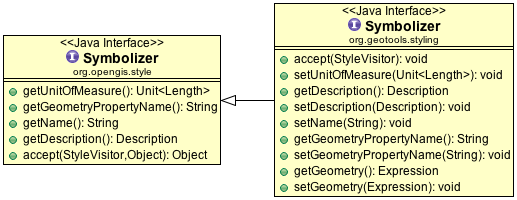

Style Layer Descriptor¶
The gt-api module provides interfaces for the style layer descriptor data structure and offers GeoTools specific extensions to the symbology encoding data structure.
References:
- style (tutorial)
- gt-opengis symbology encoding
- gt-render style (code examples)
- http://www.opengeospatial.org/standards/sld (style layer descriptor)
- http://www.opengeospatial.org/standards/symbol (symbology encoding)
Style Layer Descriptor¶
The StyleLayerDescriptor concept comes to us from the SLD specification. It is aimed at defining how a web map server can draw an entire map (with all the layers included in one gulp.)

Since many of the elements referenced above assume we are operating inside a WMS this class is not used frequently during day to day use.
That said if you are letting a user manage styles you will want to let them provide names and titles and general organise what is going on.
Styling for a Map is captured with three initial classes:
- StyledLayerDescriptor representing the styling information for an entire Map
- NamedLayer defines FeatureTypeConstraints to test if the style is applicable to your data, and a list of Style
- Style defines how features or Rasters are to be drawn
Symbology Encoding¶
This implementation differs slightly in its approach presented in gt-opengis in that the objects are mutable and can be modified after construction.
This section also introduces some of the interesting GeoTools specific extensions that have been created.
In the above example of Rule you can see the following differences:
Rule.isElseFilter()
Rule.setElseFilter()
Both getters and setters are now provided.
Rule.symbolizers() provides direct access to a List<Symbolizer>
You can modify the list of symbolizers directly:
rule.clear(); rule.symbolizers().add( pointSymbolizer );
This style of programming is available when working with symbology encoding data structures such as Rule.
Symbolizer¶
GeoTools extends the concept of Symbolizer allowing the geometry to be defined using a general Expression (rather than just a PropertyName references). This facility allows a geometry to be defined using a Function expression giving users an opportunity to preprocess the geometry.
TextSymbolizer¶
GeoTools extends the concept of a TextSymbolizer allowing:
TextSymbolizer.getPriority()
Priority used to determine precedence when labels collisions occur during rendering. The label with the highest priority “wins” with the others being moved out of the way (within a tolerance) or just not displayed.
TextSymbolizer.getOption(String)
Additional vendor specific options used to control the rendering process.
TextSymbolizer2.getGraphic()
Graphic to display behind the text label
TextSymbolizer2.getSnippet()
Used by text renderers such as KML and RSS to specify a snippet of text.
TextSymbolizer2.getFeatureDescription()
Used by formats like KML or RSS to supply info on a feature.
SLD Utility Class¶
The SLD utility class is used to perform common operations on Style objects. This is the class you can used when you “just” want to hack away at an existing Style object.
This utility class originated as part of the uDig application.
Changing the Colors
Utility methods exits to change the “first” symbolizer found in the Style:
SLD.setLineColour(style, Color.BLUE ); SLD.setPolyColour(style, Color.RED );
You can also perform these kinds of changes on individual symbolizers:
SLD.setLineColour( lineSymbolizer, Color.BLUE ); SLD.setPolyColour( polygonSymbolizer, Color.RED );
You can combine this approach with a StyleVisitor to edit the colors for specific rules:
DuplicatingStyleVisitor repaint = new DuplicatingStyleVisitor(){ boolean flag=false; public void visit(Rule rule){ flag=rule.getName().equals("fred"); super.visit( rule ); // makes a copy flag=false; } public void visit(PolygonSymbolizer polygonSymbolizer){ super.visit( rule ); // makes a copy if( flag ){ PolygonSymbolizer copy = getObject(); // the copy just made SLD.setPolyColour( copy, Color.RED ); } } }; style.accepts( repaint ): Style modified = (Style) repaint.getObject();